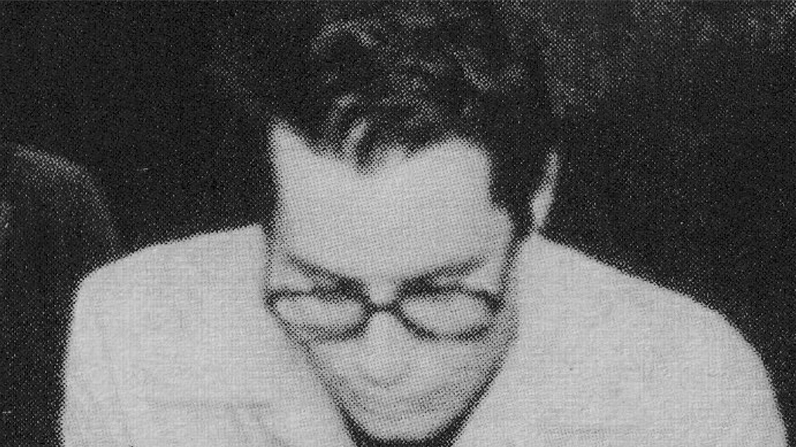

Ramon Galvan is an experimental pop project from Cape Town, South Africa. Blending post rock, folk and electronic sensibilities.

Ramon Galvan is an experimental pop project from Cape Town, South Africa. Blending post rock, folk and electronic sensibilities.
Opaker, Ramon Galvan's latest collection thrives on fracture: conducted through dismantled telephone mechanisms, culled from remote studio jams during 2020, written in isolation. The songs channel busted electronics, skeletal pulses of early hip hop and the abyssal grandeur of lyrics that hover on the edge of disclosure, refusing catharsis.
Written and Recorded by Ramon Galvan and Nic da Silva
Cover Design by Jesse Breytenbach
Art Direction by Ramon Galvan
Mixed and Mastered by Simon Ratcliffe at Sound and Motion, Cape Town

Contact me